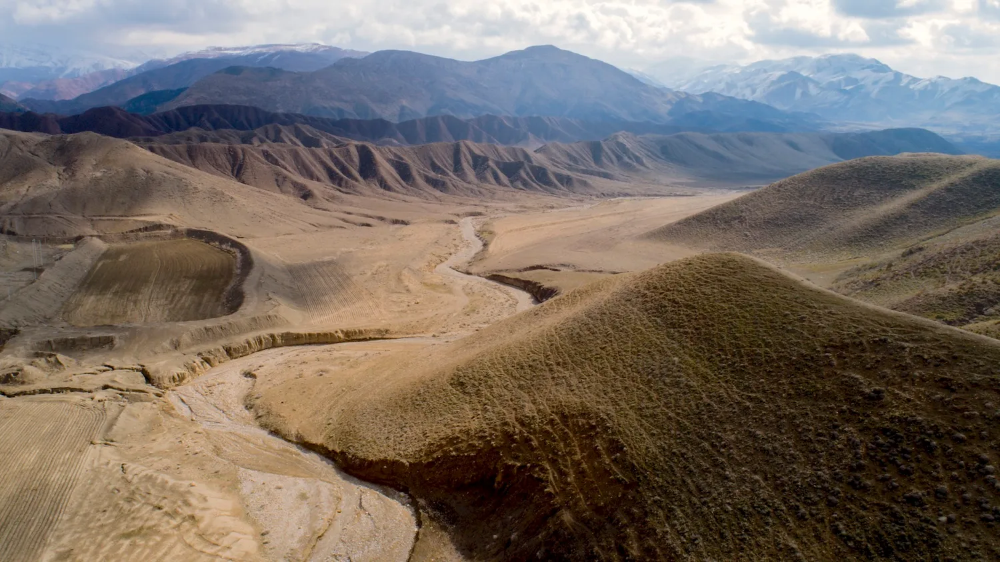
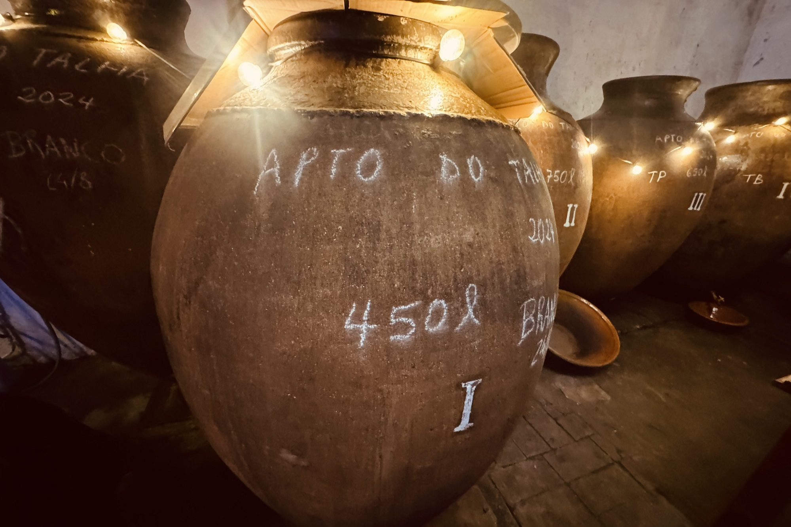

Ashkan’s hands slowly blistered as he dug. The green gardening gloves he wore, a gift from his mother, were doing little to stop the wounds. It was a hot day, and the sun-baked earth crumbled under the spade with ease. He’d been digging a while now, at least an hour and found himself waist height in the hole. He paused, stopping to wipe his brow. He flicked his hand out and accidentally covered Omid’s face with drops of sweat. Blind old dog. He was 13 now, and was once an elegant Sage Mazandarani. Now he followed Ashkan everywhere by smell. Omid, unbothered, licked the drops of sweat from his grey face. Ashkan’s father, Nader, won the pup in a game of backgammon just after his birth, and all throughout his childhood his father would never stop saying with glee to everyone he met, “This dog is the biggest dog in all of Shiraz. This dog could kill a bear if it needed to.” It was embarrassing. The truth was Omid was afraid of mice, well he used to be. Now he sleeps most days and moves slowly and no longer notices the little things. Ashkan still had great love for Omid he just wished he wasn’t so old. He couldn’t imagine what life would be like without him, but he’d find out soon enough he guessed; and then he’d be digging a new hole for a different animal. The thought made him pause and he looked at Omid, panting in the sun, waiting patiently. Maybe its okay. It’s just his time soon and he’ll be returned to God like all things. Or, maybe not. Ashkan struck the spade into the ground and looked down into the hole. A small spider kept trying to crawl up the side but the earth kept slipping. Do dogs go to Jannah? He tried to think back to his scripture lessons in Shiraz and Bushehr years ago. He couldn’t recall anything about dogs. He doubted his father would know. Maybe he’ll ask his mother.
The wind changed only a little. But it was enough for Ashkan to smell the stench from the dead goat Infront of him. Full of maggots, rotting in the sun. Nader had left it for days. He didn’t know why. It wasn’t supposed to be left for days, It needed to be buried. Sometimes his father confused him. He started digging again. He was almost deep enough. They’d been here in Khesht four years now as a family, looking after his grandfather’s grape farm. He missed the city. There were less kids to play with around here, and Bushehr the closest town was far less beautiful than Shiraz, but sometimes on weekends they used to make the trip to Shiraz to see his grandfather in the hospital. He wouldn’t say much and Ashkan thought he was only pretending to remember him. But Nader would sit by his bed and feed him grapes. That seemed to make him talk more somehow. “Magic grapes” Nader would say on the drive back, always with a sly smile. Ashkan loved this. He would run through the vines eating the magic grapes thinking about all the powers he might now have. His father stopped saying that though after Ashkan told a friend at his school in Bushehr. He remembered his friend bringing it up in front of his teacher, and then the look the teacher gave him. A stern look of concern. That night Nader came into his room and sat on his bed. He explained the magic grapes and how it worked, and how it wasn’t magic. That grandpa was sick and these grapes reminded him of home, the taste unlocked something in him that made him want to talk. “How Dad?” “It’s complicated” “Does god do this?” “Maybe. It’s something the brain does. So, if your friends ask don’t say magic grapes. It might be best to say medicine grapes. Okay Eshgaham?” His father always called him that, he rarely heard his own name. He remembered around that time his mother and father fighting a lot. Whispering in the kitchen while he tried to sleep. Soon he no longer had to go to school.
Ashkan froze. There it was again. The rumble in the sky. Like thunder that doesn’t stop. He looked up from the hill and out over to the coast trying to see it. He’d only ever seen one once, but he’d been hearing them almost daily now. One time it was so loud the windows in the farmhouse rattled and he could swear they were about to burst. It was terrifying. He crouched down in the hole and covered his head, cursing the reaper in the sky. They’d tried to explain it, his mother and father, but it didn’t make sense to him. Ashkan sensed It didn’t make sense to them either. One night he came home after a night walk and his mother Samira was crying. Pleading with his father. Akshan watched from the door. “You have to stay, please. We need you here. What do you think is going to happen, Nader, they will mow you all down.” His father whispered intently into her ear, like it was life or death, and in a way it was. He could only make out certain words. Something about thousands of people feeling the same. Something about a new future. She pushed him gently and then grabbed him by his shirt, hands digging in, popping a button off. “What is not here! What will be any different for you right here right now!” The button rolled towards the door. Samira relaxed her hold. Nader couldn’t look at her. He shook her off and went to pick up his button. His eyes met Ashkans and a look of guilt washed over him. This happened a few more times, often in the evenings. He could hear them from his room but he stopped trying to listen. It upset him too much to think of his father leaving. It stopped when the school was blown up in Minab. It was all over the news. Nader went very quiet. No more kitchen arguments. He would sit outside alone on the stone bench by the palm. Ashkan watched him one day crying silently. “Mum, why does he do this?” “He just needs to be alone sometimes.” “Does he cry for the school girls?” “Yes, and for the hope he once had.” Nader stayed; he didn’t go to the city. He started turning off the news and sometimes him and Samira would sit on the bench by the palm together.
The rolling thunder faded and he slowly climbed out of the hole. To Ashkan they were simply monsters. A force you can’t reason with, that were here for reasons of their own, nebulous and obscure. He dusted off his blue denim jeans and white linen shirt. He’d scuffed up his adidas shoes. It didn’t matter anymore, there was no one his age to show them off to. Omid was unfazed. He used to be scared by the noise, but it has become such a regular occurrence, now he just sits. Ashkan grabbed the carcass of the goat with his gloves and dragged the rotting corpse into the hole and shovel by shovel he filled it in. This time his mind didn’t wander. He moved quicker than before despite his blisters. All that was in his head was that roaring noise. He didn’t like being alone out here with it. They wouldn’t waste a bomb on a single boy digging a grave, would they? Then he remembered they’d hit over 100 school girls in the middle of class and he began to shovel faster. By the time he was done the sun was starting to get low. It would take him half an hour to walk back to the farmhouse in the valley.

Dusk crept up quickly, and the soft glow of the light in the valley grew bigger as Ashkan walked on. His feet dragging slightly across the earth. The spade in his hands slowly becoming heavier. He could hear laughter, and that’s when he remembered, his mother was away for two nights. She was in Shiraz getting photos developed. She used to work as a photographer, shooting many wedding ceremonies all around Iran. She had quite the portfolio and website, and many clients reached out to her. She stopped when they moved to Khesht, but was asked to pick up the camera again for a close friend’s wedding. His mother had been so annoyed about getting the permit for it again. Weeks of waiting to be told by the ministry of culture that she could do something she’d done her whole life. He understood her frustrations but thought it was unnecessary. She was basically famous they’ll give her the permit again, what was she so stressed about.
He put the spade by the gate with a clunk. His father looked up from his card game. He was in an overly cheerful mood. “My boy, how was your walk!” He sat outside on a bunch of simple plastic chairs with four friends. Three locals Ashkan had never seen before and one old friend from Shiraz, Ibrahim. His mother didn’t like Ibrahim, he remembered that much. He replied to his father. “It was nice, the sunset over the mountains is so beautiful today.” it was a white lie, he hadn’t looked up from the road, but it made his father smile. “That it would have been. Did you hear the jet? The Devils.” “Good to see you Ashkan, go with peace” Ibrahim held his hand out as Ashkan passed. He shook it loosely. “Good to see you too.” Ashkan meant it. Ibrahim was cheeky, that’s why his mother didn’t like him, but he always greeted Ashkan with a smile. He was likely the source of the cards they were playing and the cigarettes they were smoking. Something his dad only did when Samira was away. He stood out to Ashkan for having a big beard stained with Tabacco smoke that didn’t suit him at all. This beard confused him in the same way his father sometimes did. Ibrahim even dressed like a religious scholar despite hearing his mother call him ‘the worst Muslim in Iran’ whenever he was brought up. “what’s this,” He turned over Ashkan’s hand, and inspected the blisters. “How did that happen?” Ashkan pulled away and Ibrahim let go. “I was digging.” His father leant forward. “What were you digging for?” Suddenly he saw that all the faces had turned to him. Everyone was listening. He didn’t know why, but he thought it would be wrong to tell the truth. That his father would be embarrassed or exposed for leaving one of his goats to rot. “I wanted to see if I could find some clay.” Ibrahim smiled. A few of the old neighbours laughed. One shouted. “Clay! Up there? Much better luck in the valley boy. I take it you didn’t find any?” “no.” They chuckled, but Nader looked directly at his son, a soft smile creeping over his face, a soft thank you. With a simple glance amongst the laughter, Ashkan felt what he felt. They’d found the goat together a few days ago on a walk. It had disturbed Ashkan, Nader could tell, and now his sweet boy was doing what he thought was right, despite the fact it didn’t make a difference. With out breaking eye contact his father spoke. “A hole is useful thing these days brothers. Let’s not be rude, the boys been working. Maybe we should plant a tree up there tomorrow?” “Or more grapes?” Ibrahim leant in and slapped his father’s back. “Yes, maybe more grapes.” An alarm goes off on multiple phones, right as the sun sets. The cards go down and a seriousness creeps in. The strange men stand up in silence. They’ve brought their mats with them. They ruffle them out on the dirt beside the front porch and kneel down and begin to pray. “Ashkan, come inside with us, we’re praying in the basement today.” His father walked into the house.
This didn’t usually happen like this. Ibrahim and Nader rolled out their Sajjadeh in a small dugout cellar full of clay pots. He remembered his father had always been observant of the prayer times but never once asked Ashkan to do it or taught him how. They sat there in silence, knelt in prayer together lit by a single dim warm bulb. Ashkan had always just done what he thought he should. He had never been taken to a mosque by his father and this concerned him since prayer seemed to be a large part of Nader’s life. He had asked him once. “Why do you pray every day yet you don’t make me join you.” Nader had ruminated a long time before answering bluntly, like he was walking an invisible tightrope only to jump off of it. “Because my father made me pray when I was young. And I believe it is a way of honouring him. I didn’t while he lived, and now that he is gone it feels like it’s my way to thank him for everything he has given us, this place, the farm. It just feels right. I didn’t say that to him when he was alive, so I say it in prayer.” “How do I honour you then, eventually, if not with prayer” Nader put his hand on Ashkan’s shoulder “You can honour me with prayer. You can honour me anyway you want Eshgaham. This works for me. Find what works for you too”

Finally Ibrahim got up and rolled up his Sajjadeh, slowly followed by Nader. Ashkan forgot how rough it could be on the knees even with the mat. “Well then, that’s the day done” Ibrahim said to Nader with a wry smile. “When’s Samira home?” “Day after next.” “Enough time for a bit of juice” “There’s always enough time for a bit of juice.” Ashkan watched his father awkwardly shuffle through the pots, moving them around to access one stuck at the very back. He’d never seen this before. He knew his father spent time in the cellar but was always told not to go in here. It was dark and spooky, he hated it usually, but today was different. Today, despite the goat, seemed light and fun. His father was in an almost playful mood, excited for something. “Ah ha! This one” He lifted up a large heavy pot sealed with a ceramic lid; it was full of something. He passed it to Ibrahim stepping back out of the maze he had created. They put it on the ground and slowly wedged it open. It made a hiss. Ashkan watched in confusion. This was all new. Ibrahim lent down and wafted his hand about the reddish liquid. “Smells good” He grinned. Nader then did the same with his hand. “It does, I think it’s okay.” his father dipped his Pinky in and tasted it. Ashkan couldn’t hold his tongue any longer. “What is it?” His dad looked up with that same peaceful smile he had outside. “What it is, is a family secret, kind of like the goat you buried today. Do you understand?” Ashkan nodded. “Your grandfathers grandfather used to make this here. For a long time, he was the best in the country. Now things have changed and its difficult. But the people in these parts, many of them still make it. It’s a tradition.” “Is it alcohol?” Ashkan cut in, his dad was worrying him. Ibrahim laughed and Nader continued. “It is a type of alcohol yes. But its more than that too. Its grandpas’ magic grapes. It’s why this place exists in the first place.” “Does mum know?” “She does, but do not mention this to her. She understands the tradition, and enjoys the juice too, but she would not like you to know about this.” He hadn’t heard the term magic grapes in years, he thought his dad had forgotten. All of a sudden it came flooding back, a feeling of wonder and that they were cultivating something special. “Would you like to try some?”
They sat outside drinking, playing cards and backgammon for hours. He couldn’t stop smiling. The world spun brilliantly, the faces of the strangers from before soon became friends and the blisters on his hands stopped aching. He sipped from a small plastic cup half filled with the bitter juice without fear, now totally replaced by a relaxed stupor. His dad was looking at him with pride. There was a breeze in the valley, but the night air stayed warm from the day and Ashkan could almost smell the fruit from the vines on the hills. Ibrahim offered Ashkan a cigarette but Nader slapped it away. “Too many vices in one day!” Nader shouted. They laughed. Every now and then one of the men would walk inside to the cellar and fill their cups. Despite being completely alone out here in the valley Ashkan could sense how secret this needed to be. How big of a privilege it was to be shown this wonderful new thing, and how much he loved his father. His cup ran empty and he kept attempting to play cards. Much to the delight of the group he kept losing. He gave up as they played on, happy to have a moment in solitude. He tilted his head up to the heavens and got lost in the stars. He thought about the day and realised; this is the first time in his life he didn’t feel like a boy anymore. Was that what his dad had seen in him today. He saw something wrong with the world and instead of ignoring it, he climbed a hill and did something about it. That’s what a man would have done, not a boy. It all made sense, that’s why his father left the goat. He smiled, happy with himself, feeling both dumb and smart at the same time. That’s when he saw it.
There was a light in the sky, off to the left, high up and far away, heading east. It wasn’t a normal plane, too faint and didn’t blink. It moved quickly but wasn’t a comet or a satellite. It almost appeared to be moving in an arch. Then, seemingly out of nowhere another light appeared, even faster. It was chasing the other. They were almost directly above him now. Ashkan tensed as the two points finally drew together. Then something amazing happened. A small fireball, fifth-teen kilometres above him erupted. “Look” He jumped out of his chair, and pointed at the sky. The men all looked up in wonder. It was bright enough that a subtle glow shone on all their faces, a twinkle in their eyes. Whatever it was, it was now in thousands of pieces scattering and falling at supersonic speeds, engulfed in flames, like a brilliant firework. One of the men covered his ears, another jumped up and praised God. The third screamed, and for the first time in years Omid began to bark. “Serves you right you swine!” He held his fist to the sky. Ibrahim lit another cigarette. His father watched in silence. Everyone expected a bang, but all that was heard was a muffled rumble, like very distant lightening. A minute later it was all over. “Is that going to land close?” The man with hands on his ears asked. Nader was silent.
Nader sent the neighbour’s home. Ibrahim hugged his Nader and told him to call if he needed anything. He got in his car and drunkenly drove back to shiraz. He had planned to stay the night, but something no longer felt right. Ashkan asked his father what it was up there. “Was it one of the jets?” “I don’t know Eshgaham. But we’ll prepare for the worst.” “What do you mean the worst?” “Never mind we’ll talk tomorrow morning okay.” His father sent him to his room. A strange way to end a night he’ll never forget. Maybe it was the drink, or the grunting he heard coming from the basement, but Ashkan opened his door. He tiptoed through the house to the entrance of the basement. He peered down the stairs and saw his father. Hunched over, puffing, almost frantically poring jugs of the juice down the drain. He crept back into his room. A sick feeling in his stomach as he lay in bed. Something was coming.